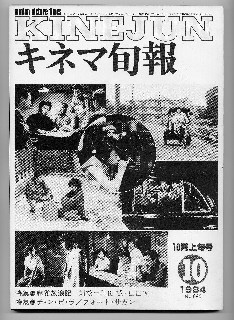
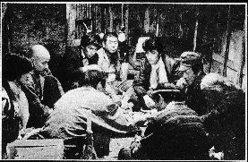
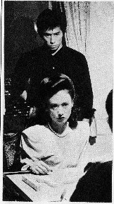
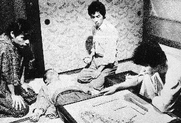

キネマ旬報という名の映画雑誌（キネマとはシネマの別の表現）。これの1984年10月号。そしてあの不朽の名作、「麻雀放浪記」の特集号である。

公開されたとき、必死こいて観に行った。(^-^；
面白かったし嬉しかった。大体小説が映画化されるち、ひたすら原作を破壊した出来上がりのものが多い。
この映画にしても、和田誠という、それまで聞いたことのない監督（ってゆーか、初監督作品）。必死になって観にいった反面、ほとんど期待していなかった。しかし出来上がりは原作の迫力そのままの素晴らしいものだった。もう和田監督に感謝 and 最敬礼するしかない。
導入部。焼け跡シーンと、そこに流れるリンゴの唄。そして戦後の一時期を彷彿とさせるチンリロリン部落でのエピソードへと続く。

ここで主人公の坊や哲がドサ健と出会うわけだが、このエピソードのときだけ登場するオカマちゃんが抜群だった。
※見たときは、（ひでぇのが出てきたな）と思ったが、後で聞いたら実は有名な推理小説評論家だった。
左側のスチール写真は、主人公の真田浩之とアメリカンクラブのオーナーである加賀まり子。もともとσ(^-^)は加賀まり子のファンなので、このときも（なんて、いい女だ）と思った。(^-^；
右側は積み込み名人の出目徳が、九連宝灯をアガった直後に倒れてしまったところ。う〜みゅ、一時は、（どうせならこのように）と思った時期もあった。しかしいまはなんとも言えない。(-_-)
 
写真をもっともっと紹介したいが、問題が生じてもいけないので、こいだけ。(_
_； いいたいことは、「キネマ旬報の1986年10月号は、愛雀家にとって大事な雑誌」ということなのさ。
|